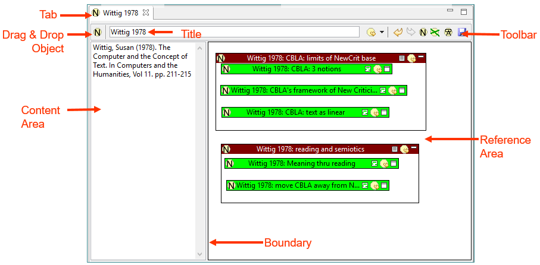

|
|
The Note Editor is invoked by Pliny whenever you wish to change the content of a Note. It is an editor, so it will launch an editing space for the note it is allowing you to edit in the editor pane.
Notes are a key element in more than one way in Pliny. You can seetwo ways to use notes be looking at two tutorials: using Pliny with non-digital materials, and using Pliny to organise notes.
Here is a typical display of the Note Editor, with its parts labelled:

Tabs appear at the top of the editor pane. The highlighted one (in the figure, "Wittig 1978") belongs to the main screen area below. The "X" icon can be clicked on to close the object.
All notes have two major components, content and reference, and they are displayed side-by-side in the Note Editor. The Reference area is separated from the Content areas by a boundary. Drag the boundary area left or right to change the proportion of screen are given to the two portions.
In Pliny, all references, including Notes, have a title. The title of the current note appears here and can be edited by clicking in the title area. If the title is too long to appear in the window the area will roll left/right to give access to the entire title. After you have finished editing the text you needn't do anything, but if you want to explicitly close the editing space so that you can see the effect, click somewhere out of the editing space when done.
The content area contains the text associated with the Note. To edit the content click in the text in the content area. After you have finished editing the text you needn't do anything, but if you want to explicitly close the editing space, click somewhere out of the editing space when done.
Unfortunately, no formatting facilities for the text in the content area are provided in Pliny. Since notes are generally likely to be relatively short (if they are long then they will have structure that means that they should perhaps be divided into separate notes). If you wish to introduce markup for formatting I suggest that you use a scheme similar to that used to be provided in older Wiki software:
This is the area where references to other Pliny resources are displayed. The Reference area provides a working 2D space for laying out the reference objects. There is more about the Reference area here.
The  that appears to the
left of the title can be used in drag and drop objects as a drag source. If you
wish to include a reference to this open note in another reference object's
reference area, you can take drag this object into the reference area of the
other object and Pliny will create a reference object for you there. See the
section below on Drag and Drop in the material about the Note Editor (below)
for more details.
that appears to the
left of the title can be used in drag and drop objects as a drag source. If you
wish to include a reference to this open note in another reference object's
reference area, you can take drag this object into the reference area of the
other object and Pliny will create a reference object for you there. See the
section below on Drag and Drop in the material about the Note Editor (below)
for more details.
The toolbar for the Note Editor (which Eclipse places in the main toolbar area) contains tools that work with the Note Editor. Most of them are used with the Reference Area and allow things to be done within it. The toolbar for the Note Editor looks like this:
The tools and their icons are:
An important element of Pliny's design was in the work involved in trying to make the creation of notes as straight-forward as possible. To this end we have added various drag and drop features to Pliny. Of course, references can be dragged about in a note's reference area -- that is how you make use of the 2D space the reference area provided to organise the notes. However, drag and drop can also be used to copy materials from outside the note editor into it, or from inside the note area to other areas. Here is a summary of these drag and drop features available in the Note Editor:
Here are the kind of things that can be dragged from elsewhere into the note editor's reference area:
The note editor provides two kinds of drag source objects that can be dragged from the note editor into another Pliny object. The following figure shows them:
Here we see Pliny displaying two notes (the help section "Dividing a Pane: docking" in the topic Managing Panes describes how to split the Pliny window in this way). The top part contains the note "History of Computing" and the bottom is displaying "Ethnography & History". A Pliny user can use one of the two drag source objects shown to make a reference from something in one note to the other.
Pliny is meant to help you organise materials in ways that represent issues of interest to you. When you have something that you wish to describe to others you are likely to want to write an article about it. Pliny can be useful in the article-creation process -- one can create a note which represents the eventual article itself, and then use its reference area to bring to together ideas that you think should appear in the article, and you can use the 2D reference area itself, and connections bewteen the references to help you sort out the relationships between the ideas represented by the materials you have assembled. However, turning this into an artiple still involves some significant amount of further work.
Pliny does not do this conversion for you, but you can use a Note's generating text tool to get all the notes you have assembled relative to this article out into a single text file. From there you could use a word processor to reorganise the notes and work on the text they contain until an article appears.
Note: This tool is even more experimental than the rest of Pliny and is likely to evolve considerably over time or perhaps be entirely replaced by something better.
To use the text generation tool, first click on the tool you find in the Note Editor's toolbar. The following things will happen:
The generated HTML file will not be very pretty! It is not, after all, a finished text -- but simply a kind of dump of notes and references to other Pliny objects into a text file. As such, the result is really meant to act merely as a starting point from which article text can be more conveniently written. The file begins with the note that is currently open, and displays first its textual content. Then, it displays a list of items -- one for each resource referenced on the main note's reference area. The contents of the item are organised by sorting the items first vertically (so that objects near the top of the reference area come out first), and then horizontally, so that objects exactly side by side appear with the one to the left appearing first. Options are provided to allow for a recursive generation -- to display the reference area of resources referenced on the main note's reference area, and so on potentially as many levels as the system can find. These secondary references will appear indented within the list of items in the generated file.
You can certainly view this file in a browser, and perhaps cut and paste materials from there into your word processor. With many versions of Microsoft Word, and perhaps with other word processors too, you can ask them to open the HTML file directly (the action might be different depending upon whether you have asked Pliny to create it as an XHTML file or not -- try them both to see which you like more). Once you see this Pliny-generated file in your word processor you can begin the job of rearrangine the materials, writing prose text inspired by the note materials, etc etc. Furthermore, the HTML that is generated is well-formed XML, so an XML editor might also be able to open the file.
 |
| Pliny Help Pages by John Bradley are licensed under a Creative Commons Attribution-Noncommercial-Share Alike 2.0 UK: England & Wales License. |